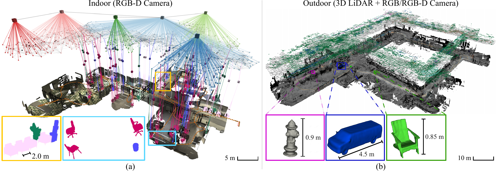

Instance shape
Learning-based estimators reconstruct full object meshes from partial observations, so object nodes store completed geometry rather than only accumulated partial surfaces.

3D scene graphs provide a hierarchical abstraction of environments by encoding spatial entities and their relationships. Existing scene graph systems usually model object geometry with partial point clouds or class-level CAD templates, limiting instance-specific shape detail. Hydra++ integrates category-agnostic shape estimation into a hierarchical 3D scene graph pipeline, adds a reprojection-mask consistency check to reject degenerate shape predictions, and supports a hybrid LiDAR-camera configuration for large-scale outdoor operation. Experiments in simulation and real-world outdoor scenes show improved object-level and scene-level reconstruction quality.
Scene-level abstractions are useful for reasoning about semantic context, object relations, and navigable structure, but they are often too coarse for manipulation. Mesh-level geometry is directly actionable for interaction and planning, yet it usually lacks the relational context needed for whole-scene understanding. Hydra++ targets this gap by storing completed object-level geometry inside a hierarchical 3D scene graph.

Learning-based estimators reconstruct full object meshes from partial observations, so object nodes store completed geometry rather than only accumulated partial surfaces.
The reprojection-mask consistency check rejects shape predictions whose reprojected silhouette does not agree with the observed mask.
LiDAR supplies metric scene structure while camera observations support object shape estimation for larger outdoor scenes.
CRISP is used for the real-time configuration, while SAM3D illustrates a stronger but slower out-of-domain alternative.
Hydra++ builds on the Hydra and Khronos 3D scene graph pipeline. It maintains an active-window metric-semantic map, tracks object candidates over time, then invokes a shape estimator when an object track leaves the active window. Accepted object meshes are inserted into the hierarchical scene graph together with places, regions, and spatial relationships.

The shape module uses the observation with the largest 3D bounding-box volume, which typically corresponds to the least occluded view.
Each accepted object stores semantic label, metric scale, reconstructed mesh, world-frame position, and orientation in the scene graph.
Ground-aware adaptive integration extends the negative TSDF support for ground-labeled LiDAR returns at high incidence angles.


The reprojection-mask consistency check (RMCC) samples points from the predicted mesh, reprojects them into the selected image, and compares the reprojected mask with the observed object mask. Predictions with insufficient overlap are rejected, filtering degenerate shapes caused by partial masks, over-segmentation, or poor viewpoints.
 Accepted prediction
Accepted prediction
 Rejected prediction
Rejected prediction


Hydra++ is evaluated on uHumans2 for indoor object-level scene graph quality and on Kimera-Multi for outdoor hybrid sensor operation. Unlike the original Hydra evaluation, which focused on batch and incremental scene graph construction modes, this evaluation explicitly compares predicted object nodes against real 3D object instances by measuring distances in 3D space. Object detections are matched by same-class centroid distance, while matched meshes are evaluated using Chamfer distance, 3D bounding-box IoU, and volumetric IoU.
 Reference
Reference
 SlideSLAM
SlideSLAM
 Hydra
Hydra
 Khronos
Khronos
 Hydra++
Hydra++

| Threshold | Method | P | R | F1 | Chamfer | B-IoU | V-IoU |
|---|---|---|---|---|---|---|---|
| 0.2 m | SlideSLAM | 0.206 | 0.057 | 0.089 | 0.039 | 0.606 | 0.199 |
| 0.2 m | Hydra | 0.529 | 0.409 | 0.461 | 0.035 | 0.515 | 0.298 |
| 0.2 m | Khronos | 0.362 | 0.239 | 0.288 | 0.028 | 0.671 | 0.350 |
| 0.2 m | Ours w/o RMCC | 0.670 | 0.602 | 0.634 | 0.008 | 0.690 | 0.540 |
| 0.2 m | Hydra++ | 0.787 | 0.591 | 0.675 | 0.004 | 0.739 | 0.598 |
| 0.5 m | SlideSLAM | 0.794 | 0.159 | 0.265 | 0.051 | 0.436 | 0.134 |
| 0.5 m | Hydra | 0.897 | 0.705 | 0.789 | 0.072 | 0.412 | 0.246 |
| 0.5 m | Khronos | 0.971 | 0.546 | 0.699 | 0.091 | 0.358 | 0.239 |
| 0.5 m | Ours w/o RMCC | 0.839 | 0.682 | 0.752 | 0.032 | 0.582 | 0.451 |
| 0.5 m | Hydra++ | 0.921 | 0.671 | 0.776 | 0.020 | 0.655 | 0.528 |
Table values are reproduced from the current manuscript draft; final camera-ready numbers remain subject to the paper version.


The framework is estimator-agnostic. CRISP is the default model for real-time operation over known object classes, while SAM3D shows stronger reconstruction on novel out-of-domain instances at much higher inference latency.

 uHumans2
uHumans2
 Kimera-Multi
Kimera-Multi
Outdoor reconstruction combines LiDAR-driven metric mapping with camera-driven object shape estimation. The hybrid mode improves scene mesh continuity and recovers object-level geometry for fire hydrants, cars, and benches in the Kimera-Multi sequence.
 RGB-D only
RGB-D only
 Hybrid
Hybrid
 Hybrid + adaptive
Hybrid + adaptive


@misc{limTBUhydrapp,
title = {{Hydra++}: Real-Time Hierarchical 3D Scene Graph Construction With Object-Level Shape Estimation},
author = {Lim, Hyungtae and Hughes, Nathan and Yu, Xihang and Xu, Ruihan and Chang, Yun and Shi, Jingnan and Talak, Rajat and Carlone, Luca},
howpublished = {(TBU)},
year = {(TBU)}
}